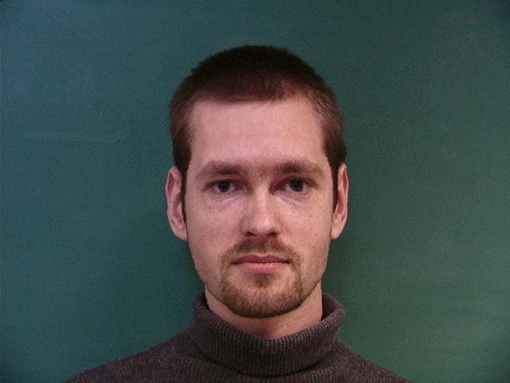
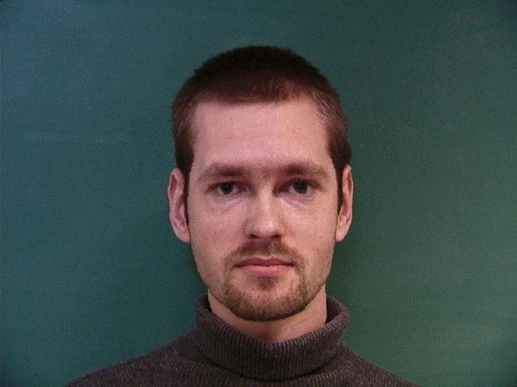I define correpondences by reusing the ginput tool used in project 2. Here is what the results look like after experimenting with different combinations of point correspondences in different locations. These sets of points appear to give the best results.
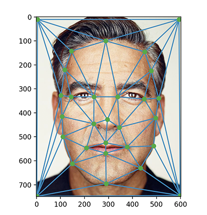 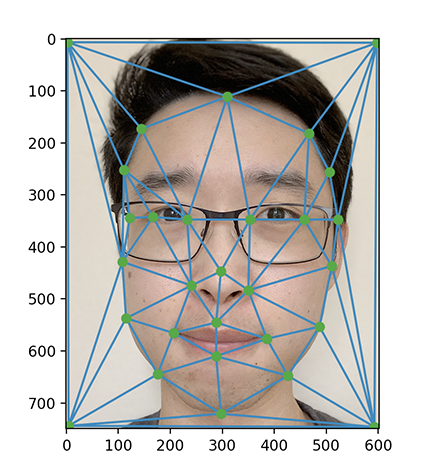
To compute the midway face, first I need to average the two sets of points, and transform the two input images to the average shape. The transformation is done by iterating through each of the triangles returned by the Delaunay triangulation algorithm, and transforming them as defined by mapping the starting and ending points (from the input images) to the triangle created from the halfway point. To do this, I would need to compute a affine transformation matrix to map the pixels within the triangles from the averaged points to the original image. After transformation, the two outputs are combined using a cross dissolve of 50-50 from both transformed outputs.
Will, George:
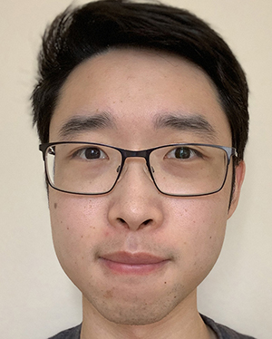 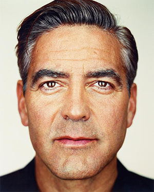
Will+George:
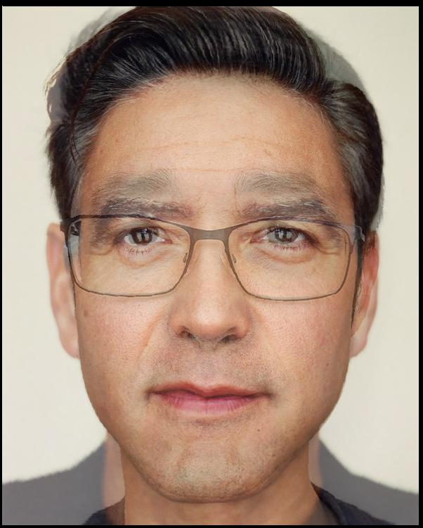
Hopefully I age this well :').
The morph sequence was performed by gradually increasing the warp factor (from 0 to 1) and cross dissolve to transition between one image to another.

I used the images and keypoints from the IMM Face Database of Danish people (http://www2.imm.dtu.dk/~aam/datasets/datasets.html) to calculate the "mean face" of a population. I added dummy keypoints for the corners in addition to the provided keypoints, in order to retain the background...
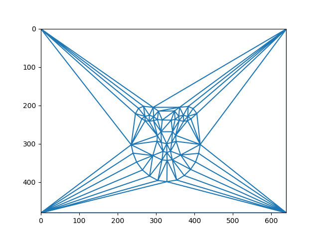
Here is the mean face:
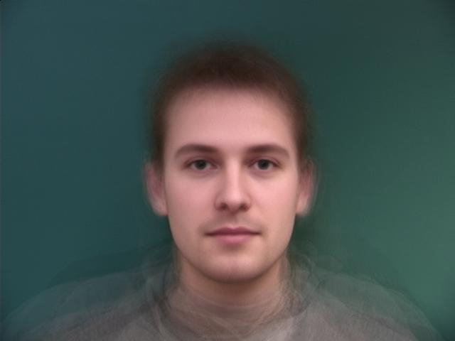
Here are some danish people morphed to the average face:
Before and After Warping for 18:
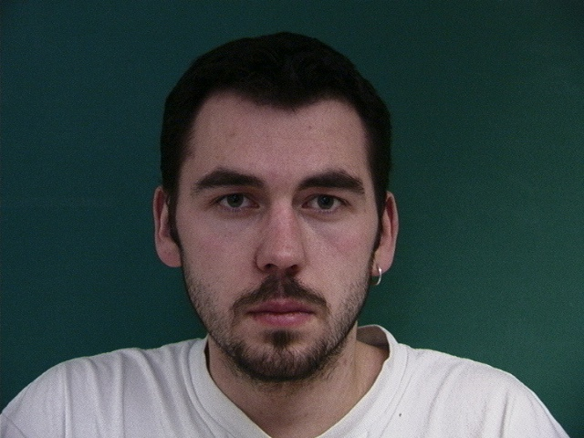 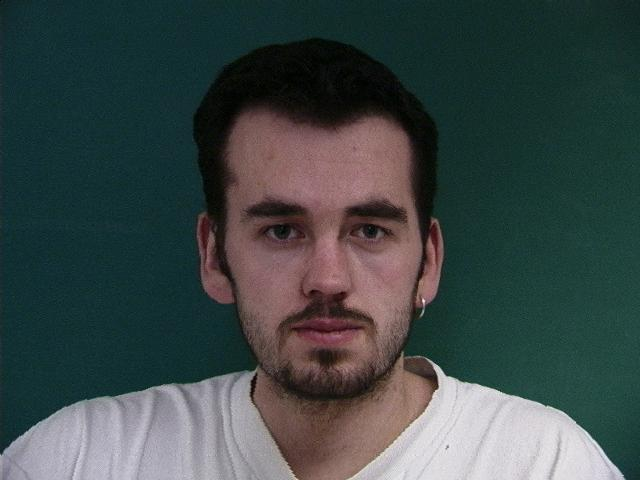
Before and After Warping for 34:
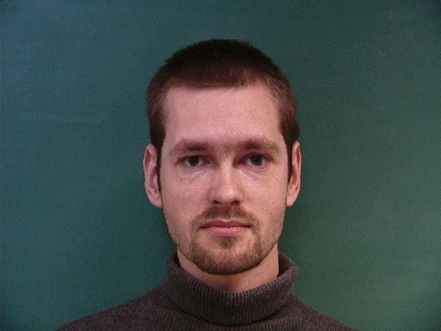
After:
Here is my face warped into the mean geometry:
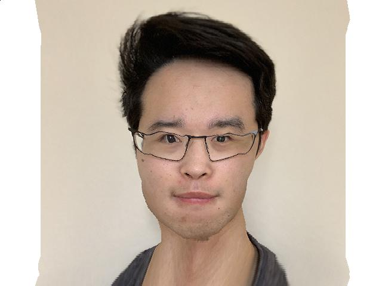
Here is the average face warped into my geometry:
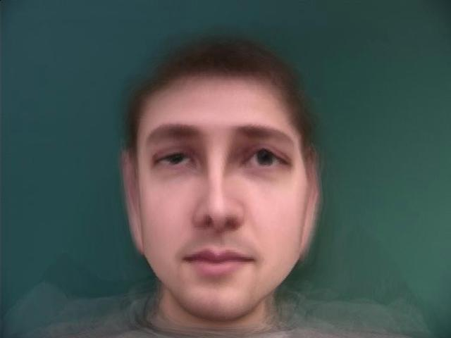
The more than usual distortion is the result of the positioning of the faces..For the caricature, I adjusted the warp factor in a morphing process to be a value above 1 and below 0, or outside the bounds of [0,1]. Here is the result of warping to -0.7 and 1.3 respectively. (rip jawline)
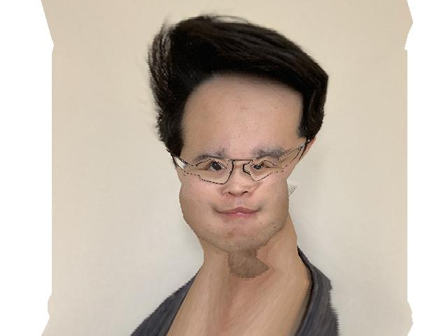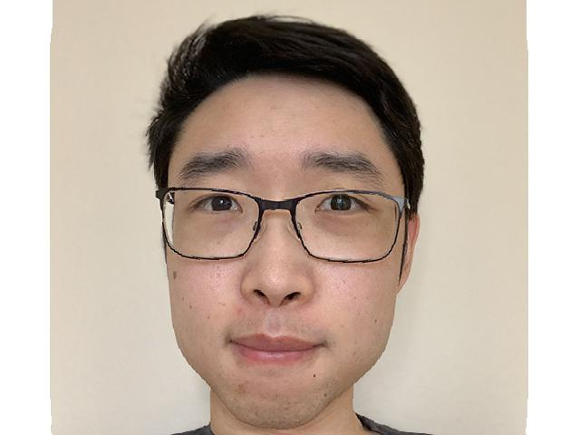
I joined a group of students to create a class morph: (https://www.youtube.com/watch?v=O3vouduLS3w)